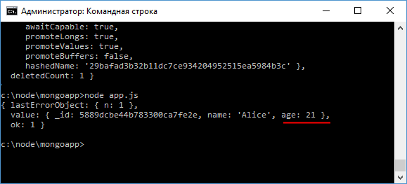
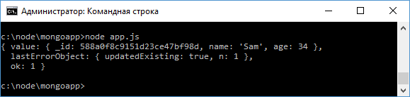

Обновление документов в MongoDB
Для обновления элементов в MongoDB есть несколько методов:
- updateOne: обновляет один документ, который соответствует критерию фильтрации, и возвращает информацию об операции обновления
- updateMany: обновляет все документы, которые соответствуют критерию фильтрации, и возвращает информацию об операции обновления
- findOneAndUpdate: обновляет один документ, который соответствует критерию фильтрации, и возвращает обновленный документ
findOneAndUpdate
Метод findOneAndUpdate() обновляет один элемент.
Он принимает следующие параметры:
- Критерий фильтрации документа, который надо обновить
- Параметр обновления
- Дополнительные опции обновления, которые по умолчанию имеют значение null
- Функция обратного вызова, которая выполняется при обновлении
Например, обновим первого пользователя в бд, у которого возраст - 21:
var mongoClient = require("mongodb").MongoClient;
var users = [{name: "Bob", age: 34} , {name: "Alice", age: 21}, {name: "Tom", age: 45}];
mongoClient.connect("mongodb://localhost:27017/usersdb", function(err, db){
var col = db.collection("users");
col.insertMany(users, function(err, results){
col.findOneAndUpdate(
{age: 21}, // критерий выборки
{ $set: {age: 25}}, // параметр обновления
function(err, result){
console.log(result);
db.close();
}
);
});
});
Сначала здесь происходит добавление 3 пользователей в базу данных, а после добавления идет обновление.
Для обновления применяется объект { $set: {age: 25}}.
Параметр $set позволяет обновить значения для одного поля или группы полей.
В данном случае изменяется поле age.
Третий параметр - функция обратного вызова выводит результат обновления.
По умолчанию это старое состояние измененного документа:
Но, допустим, после обновления мы хотим получать не старое, а новое состояние измененного документа.
Для этого мы можем задать дополнительные опции обновления.
var mongoClient = require("mongodb").MongoClient;
mongoClient.connect("mongodb://localhost:27017/usersdb", function(err, db){
var col = db.collection("users");
col.findOneAndUpdate(
{name: "Bob"}, // критерий выборки
{ $set: {name: "Sam"}}, // параметр обновления
{ // доп. опции обновления
returnOriginal: false
},
function(err, result){
console.log(result);
db.close();
}
);
});

updateMany
Метод updateMany() позволяет обновить все документы из коллекции, которые соответствуют критерию фильтрации:
var mongoClient = require("mongodb").MongoClient;
mongoClient.connect("mongodb://localhost:27017/usersdb", function(err, db){
var col = db.collection("users");
col.updateMany(
{name: "Sam"}, // критерий фильтрации
{ $set: {name: "Bob"}}, // параметр обновления
function(err, result){
console.log(result);
db.close();
}
);
});
updateOne
Метод updateOne() аналогичен методу updateMany за тем исключением, что обновляет только один элемент.
В отличие от метода findOneAndUpdate() он не возвращает измененный документ:
var mongoClient = require("mongodb").MongoClient;
mongoClient.connect("mongodb://localhost:27017/usersdb", function(err, db){
var col = db.collection("users");
col.updateOne(
{name: "Tom"},
{ $set: {name: "Tom Junior", age:33}},
function(err, result){
console.log(result);
db.close();
}
);
});